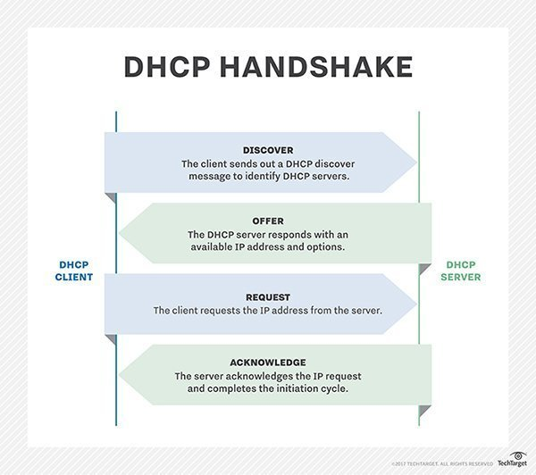
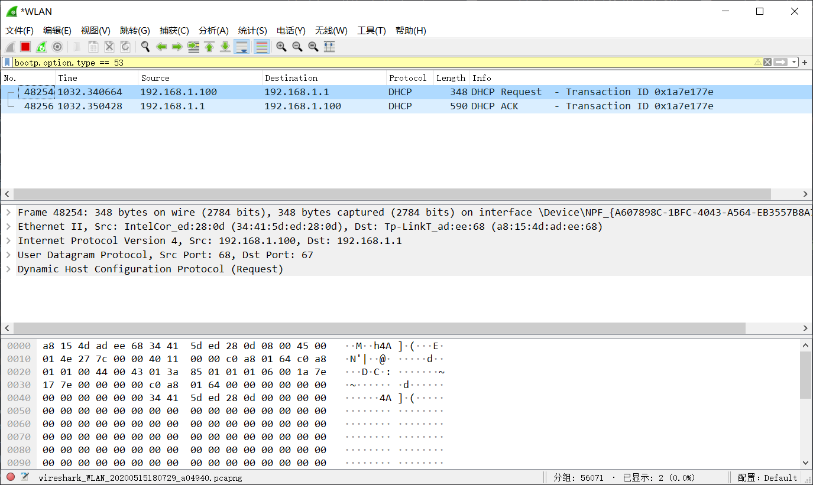
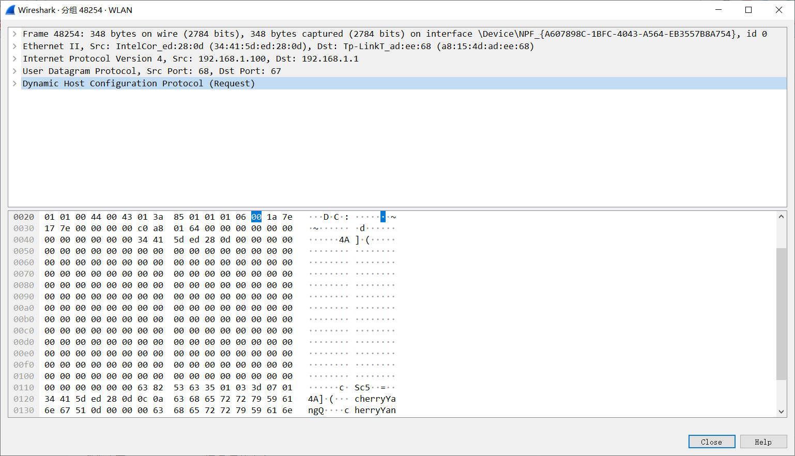
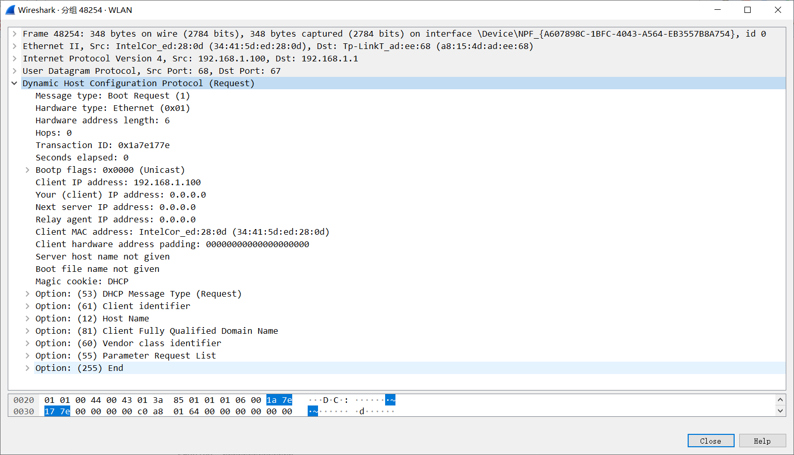
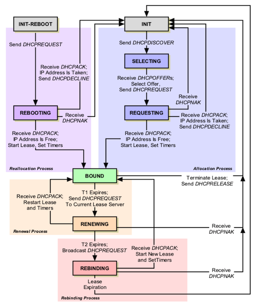
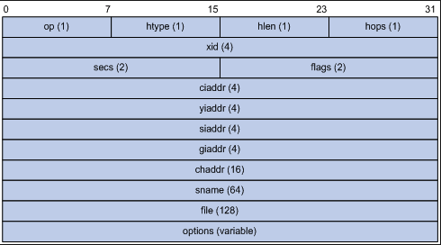
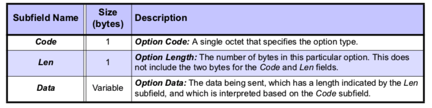

title: DHCP主机动态配置协议详解以及代码实现
mathjax: true
date: 2020-05-15 18:20:18
tags:
- 计算机网络
- TCP/IP协议
- DHCP
categories:
- 计算机网络
- TCP/IP协议
DHCP协议在我们日常生活中应该是最常见而又经常被忽略的一种协议了。当你走进一间屋子，手机自动连上了WiFi，当你离开了屋子，又自动断开了WiFi……这一系列的幕后都是DHCP协议在默默工作。
DHCP协议(Dynamic Host Configuration Protocol)是一个基于UDP协议的局域网的网络协议。指的是由服务器控制一段IP地址范围，客户机登录服务器时就可以自动获得服务器分配的IP地址和子网掩码。
该协议的做大作用是动态的为加入网络的设备分配IP地址，在该协议出现前，IP地址的分配基于静态模式，你把设备的mac地址手动在路由器设置，然后路由器自动生成一个IP与你的mac地址绑定起来。这种应用在有线网络时代可以适用，但在无线时代，每时每刻可能有不同的设备加入或离开网络，因此原有静态匹配IP的做法不再适合。
DHCP协议的诞生就是为了迎合在无线情况下，网络内部连接设备不断变化的情况。它包含两部分，一是分配IP地址，二是支持客户端请求，服务器应答，使得两者之间有效交换配置信息。
DHCP最重要功能显然是动态分配IP地址，当我们的设备连接上网络之后里面获得一个可用的IP地址，就得感谢该协议的执行，现在我们大多数设备都依靠DHCP来从路由器动态获得IP
DHCP协议能够维护一个动态的IP池，根据设备加入和离开网络回收或分发可用IP，它甚至能实现多个设备共享相同IP。DHCP协议的实现基于UDP，需要IP的设备和具备分配IP能力的设备根据DHCP协议的方式封装数据包，然后通过UDP协议发送给对方。有了该协议后，我们上网时不再麻烦的去配置各种信息，设备和路由器之间相互通信后，自动配置好相应信息，我们只要等着配置完毕然后上网就行。
DHCP支持三种地址分配方式，一种是手动分配，由管理员手动将指定IP地址分发给特定设备；第二种是自动分配，它从当前可用的IP地址池中选出一个，永久的分发给某一台特定设备；第三种是动态分配，它从IP地址池中选出一个分发给某台设备一段时间，时间到了后收回，或者设备离开网络后通知路由器主动收回，由此可见，第二种和第三种区别不大
使用动态分配方式时，管理员指定一系列可以分配的IP，然后DHCP服务器会自动维护哪些IP已经分配，哪些IP可以使用。同时服务器指定分配的IP使用时长，一旦超时后，客户必须主动向服务器请求续租，例如上图就有对应按钮，或者请求重新从服务器获得一个新的IP地址，这个请求应答过程将是我们研究和实现的重点。
DHCP协议动态分配IP的好处显而易见，首先是自动化，省却了管理员耗时耗力的维护，其次是集中管理，从服务器就可以得知IP的使用情况，由此有效防止IP冲突。而且还能实现地址的共享和重用，如果一台设备不活跃，例如关机或离开网络，协议可以及时收回IP，分发给在网络中的其他设备。
在DHCP协议管理下，所有设备只能”租借“IP而不能“拥有”IP。有租借就必须有管理，DHCP协议的主要内容就在这里。租借时常根据设备的使用情况而定，作为服务器的设备租借时间必须很长，而对于手持设备而言，租借时间可以很短。在很多情况下，管理员为了防止IP被长时间无效占用，例如某台设备计划租借一个月，但它运行一天就关机了，那么这个IP就会在余下29天浪费掉，因此管理员会强制设备租借短时期，时期到了后再跟服务器请求延长租借期。
管理员一般把IP池划分为若干类别，不同类别对应不同租期，然后根据接入设备的类型赋予不同类别的IP。一旦租期抵达一半时，设备就开始于服务器协商以便延长租期。
下面是IP租借的流程图：
上图描述了设备向DHCP服务器租借IP8天流程，其中在第4天要与服务器协商续租。租借IP的设备需要保持两个时钟，时钟T1在租借期过了一半时触发，此时设备向服务器请求续租；如果续租不成功，第二个时钟在租期87.5%时触发，设备向另一个DHCP服务器发起租借IP的请求。我们后面用代码实现协议时，主要通过构造数据包完成上面所述流程。
DHCP协议时典型的服务器客户端应用模式。需要IP的设备是客户端，分发IP的设备是服务器，两者通过互发消息完成一项任务。他们之间的交互可以由下图表达：

类似于TCP的握手，但是又比TCP简单不少。
打开网络封包分析软件WireShack，输入过滤条件bootp.option.type == 53(或者dhcp.option.type == 53也可)，在命令行中输入ipconfig/renew，表示续租DHCP服务器，我们获取这样的数据包：

点开一个数据包，看到：

我们看到DHCP协议数据包的组成格式为IP数据包->UDP数据包->Boostrap Protocoal数据包(也就是DHCP数据包)
【注】Boostrap 是DHCP协议的前身，它叫主机静态配置协议。DHCP其实是它的扩展，将原来静态配置的过程动态化，于是配置起来更加灵活方便，只不过DHCP数据包的依然以Boostrap协议数据包为基础。
我们点开DHCP看看具体内容：

通过观察，我们大概可以知道DHCP数据包大概有哪些字段，要了解这些字段的作用，我们还得充分了解协议的具体交互流程。DHCP协议以客户端<->服务器的方式进行交互，整个过程由客户端主导，服务器被动回应，因此掌握客户端的运行状态，我们就可以掌握DHCP的协议交互流程。
DHCP在执行时维护了一个状态机，该状态机由八个状态组成：
客户端在运行时维护一个内部状态机，其运行过程如下：
INIT状态。客户端创建一个DHCPDISCOVER消息在局域网内广播，查询可用的DHCP服务器，然后进入SELECTING状态。SELECTING 状态。局域网内的DHCP收到广播消息后，发送DHCPOFFER消息，客户端会收到一个或多个DHCP服务器的回应，然后它从众多回应中选取一个服务器，向它发送DHCPREQUEST消息，然后进入REQUESTING状态。REQUESTING状态。客户端向服务器发送DHCPREQUEST消息中包含了它对服务器的数据请求，例如可用IP地址以及各类配置参数，请求发送出去后它等待服务器回应。服务器会返回DHCPACK消息，里面包含了客户端想要的可用IP以及配置参数等信息。收到消息后，客户端检测服务器返回的IP地址是否可用，可用的话进入使用状态并像上一节描述的那样设置两个超时时钟。如果客户端发现IP地址不可用，它向服务器发送DHCPDECLINE消息，然后转入状态1。
如果客户端从服务器收到的是DHCPNAK消息，它表示服务器拒绝向客户端提供服务，因此客户端重新进入状态1.
INIT-REBOOT状态。如果客户端已经租借到IP，它重启后进入该状态。此时它会向服务器发送DHCPREQUEST消息，重新确定它对IP的使用权，然后客户端进入REBOOTING状态，等待服务器反应。
REBOOTING状态。此时客户正在等待服务器返回确认消息，此时会有3中情况。一是客户端收到服务器发来的DHCPACK消息，表明可以继续使用它当前IP,于是客户端进入BOUND状态；二是，客户端得到DHCPACK回应，然后发现它原来使用的IP在自己关机或重启时，被其他设备抢夺了，于是他想服务器发送DHCPDECLINE消息，然后进入状态1；三是收到服务器发来的DHCPNAK消息，这表明服务器告诉客户端IP不能再继续使用，于是客户端进入状态1.
BOUND状态。此时客户端得到可用IP地址，并进入使用状态。此时它启动两个时钟，T1和T2。当T1超时时，它进入状态RENEWING。如果客户端主动要放弃使用当前IP，它会向服务器发送DHCPRELEASE消息，然后进入状态1.
RENEWING状态。此时客户端希望续租当前IP，于是他想客户端发送DHCPREQUEST消息，然后等待服务器确认。此时客户端要面临三种情况，一是服务器返回DHCPACK消息，它可以继续使用当前IP；二是收到DHCPNAK消息，服务器拒绝客户端继续租用当前IP；三是客户端的T2时钟超时，客户端进入REBINGDING状态。
REBIDING状态。此时客户端无法继续续租原有IP，于是它持续向局域网广播DHCPREQUEST消息，直到有服务器响应它为止。此时客户端又面临三种情况。一是有服务器向客户端返回DHCPACK消息，于是客户端可以使用新分配的IP；二是服务器返回DHCPNAK消息，这表明服务器希望客户端重新启动租借流程，于是客户端进入INIT状态；第三是，在收到回应前，客户端当前租用的IP到期，它重新进入INIT状态。
为了简单起见，我们将以客户端的方式编写代码，上面的流程状态可以使用下图统一描述：

首先完成第一步，客户端向局域网广播消息，然后收到服务器应答。下面是DHCP消息的具体格式：

上面的是前面抓包时对应的DHCP部分，依次解析各个字段：
op字段1字节，它表明消息类型，请求消息使用数值1，回应消息使用数值2HType1字节，它表明消息发送所使用的网络类型，由于我们默认使用互联网，因此它的值固定为1HLen字段1字节，它表明设备硬件地址的长度，由于我们默认使用mac地址，因此该字段固定为6Hops字段1字节，它表明数据包可以跨越几个不同网络，该字段的作用我们在前面traceroute程序中了解过，由于我们希望限制消息在当前局域网内流通，因此设置为0XID字段4字节。它与ICMP消息中的session作用一样，用来标志一次对话过程Secs字段2字节。它用来表明客户端发出请求后等待的时间，一般该字段不常使用，我们将它固定为0Flags字段2字节，取值0或1，如果设置为1，客户端要求服务器以广播的方式发送回应消息，因为此时客户端可能还没有IP地址CIAddr字段4字节，它存放客户端当前IP地址，如果客户端当前有IP，而且进入状态BOUND,RENEWING状态，其他情况下统一设置为0YIAddr字段4字节，这是服务器返回给客户端使用的IPSIAddr字段4字节，服务器IP地址，它有点特殊，这个IP是不一定是当前交互的服务器IP，而是设备下次启动时去获取IP地址的服务器IPGIAddr字段4字节，网关IP，当DHCP服务器不在本地局域网时，设备将通过该IP将数据包转发给处于另一个局域网的服务器，通常情况下使用不到CHAddr字段16字节，设备的硬件地址。由于我们默认设备使用mac地址，因此只使用到6个字节，其余10个字节用0填充SName字段64个字节，该字段用做DHCP服务器的字符串名称File字段128字节，该字段用于在设备和服务器间交换特定信息Options字段，可变长。该字段用于设备和服务器间交换多种配置信息接下来我们看看Options字段，由于所有信息的交互都存储在该字段，因此我们需搞清楚它的结构。在该字段开始前是4个字节的魔术字，固定为99.130.83.99(十六进制：63 82 53 63),然后才是一系列Option数据结构，Option数据结构组成如下：

每个Option由三字段组成，第一字段是Code,用来表明当前Option类型，它有两个特殊值，一个是0，它表示当前Option只有这一个字节，另一个特殊值是255，它表示后续不再含有Option结构体；第二字段是len，用来标志数据段的长度；第三字段是Data，用来存储数据。
由于Option结构体用于客户端与服务器进行数据交换，因此它的种类相当繁杂。
代码实现将在下一篇文章中实现。